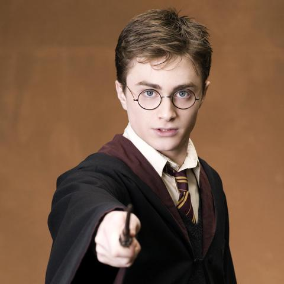
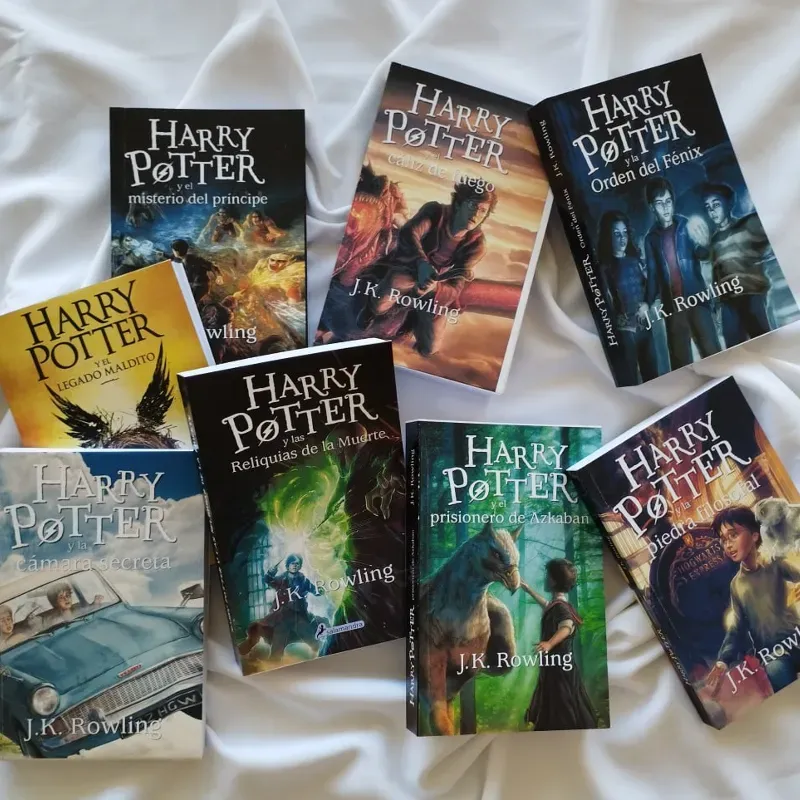
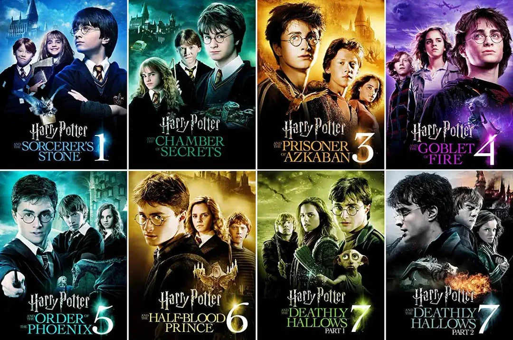
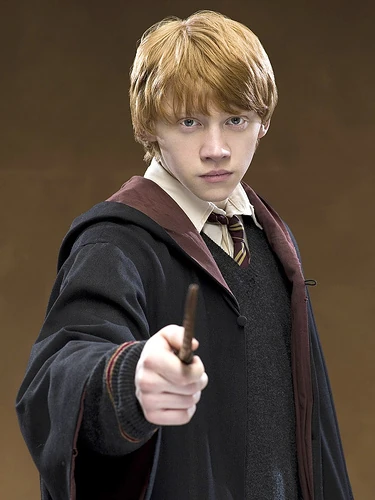
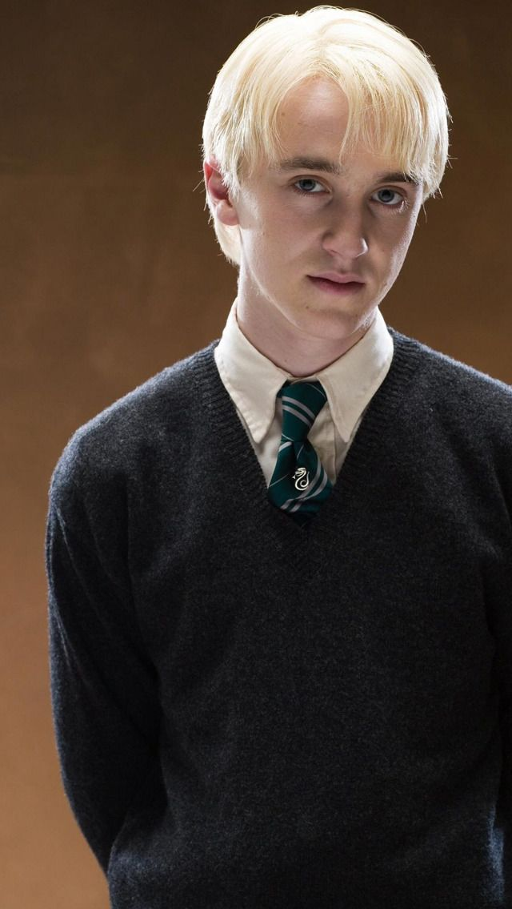
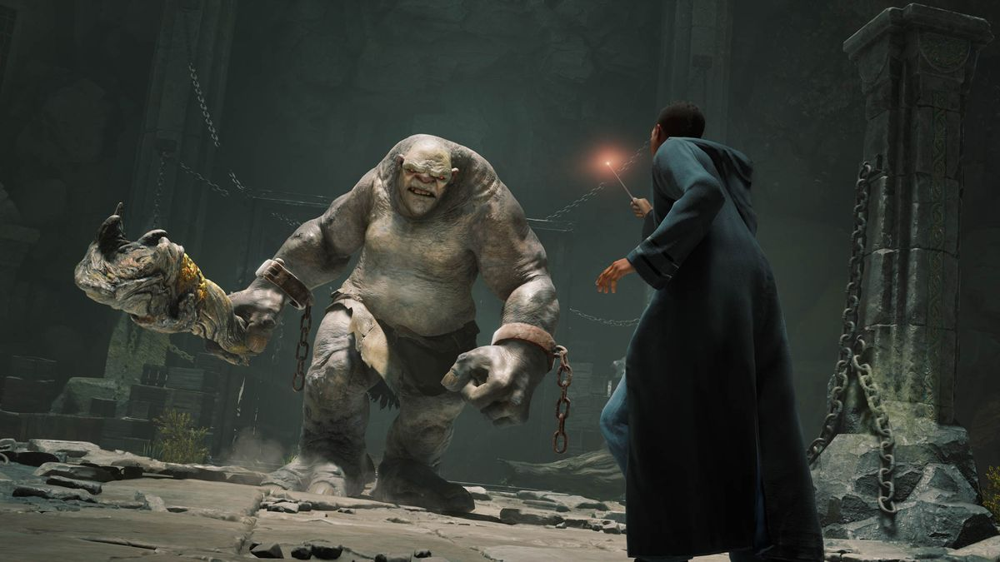
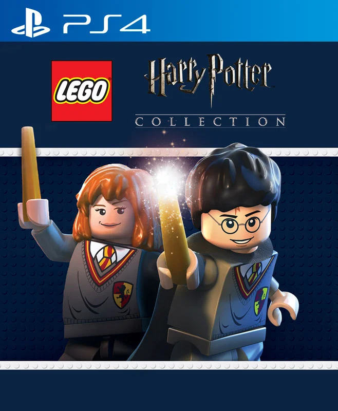
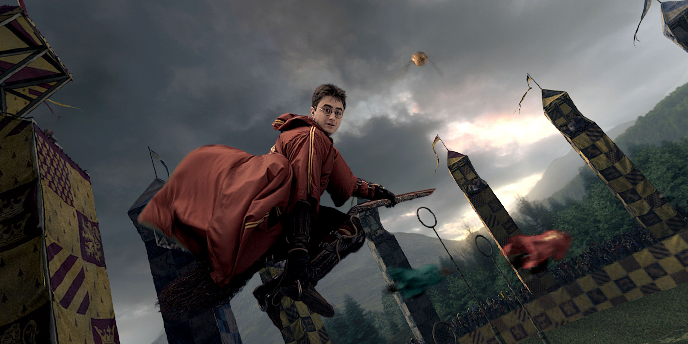

Harry Potter
Actor: Daniel Radcliffe
El protagonista de la saga. A diferencia de sus compañeros, Daniel prefiere mantener su vida privada y no tiene cuentas oficiales en ninguna red social.
Explora cómo el universo de Harry Potter se ha expandido a través de la literatura, el cine, los videojuegos y los deportes de la vida real.
La saga comenzó en 1997 con Harry Potter y la Piedra Filosofal y rápidamente se convirtió en un fenómeno global. Los 7 libros originales fueron adaptados en 8 películas taquilleras que definieron a toda una generación, expandiendo el universo visual con increíbles efectos especiales y una banda sonora icónica.
La historia de Harry Potter ha sido contada a través de múltiples formatos, incluyendo audiolibros, ediciones ilustradas y colecciones especiales. Cada adaptación ha aportado una nueva perspectiva al mundo mágico, permitiendo a los fans sumergirse en la narrativa de maneras únicas.
La saga cinematográfica, dirigida por diversos directores, ha sido aclamada por su fidelidad a los libros y por la actuación de un elenco talentoso que creció junto a sus personajes.

Ediciones de los libros de Harry Potter, incluyendo la saga completa y ediciones especiales.

Póster oficial de la saga de películas de Harry Potter, que abarca desde 2001 hasta 2011.

Actor: Daniel Radcliffe
El protagonista de la saga. A diferencia de sus compañeros, Daniel prefiere mantener su vida privada y no tiene cuentas oficiales en ninguna red social.

Actriz: Emma Watson
Además de su brillante papel, Emma es una reconocida activista y embajadora de la ONU.

Actor: Rupert Grint
El leal amigo de Harry. Rupert sigue actuando en diversas series de televisión y películas de suspenso.

Actor: Tom Felton
El eterno rival de Harry. Tom es muy activo en redes, compartiendo música y recuerdos de la saga.
Desde los clásicos juegos de plataforma en la primera PlayStation hasta las modernas experiencias de mundo abierto, los videojuegos han permitido a los fans caminar por los pasillos de Hogwarts. El mayor exponente reciente es Hogwarts Legacy, donde puedes crear a tu propio estudiante de magia en el siglo XIX.
Los videojuegos de Harry Potter han abarcado múltiples géneros, desde aventuras gráficas hasta juegos de rol y simuladores de Quidditch. Cada título ha ofrecido a los jugadores la oportunidad de explorar el mundo mágico desde diferentes perspectivas, permitiendo que la magia cobre vida en sus propias manos.
Además de Hogwarts Legacy, otros títulos como LEGO Harry Potter y Harry Potter: Wizards Unite han expandido la experiencia mágica a través de la creatividad y la realidad aumentada, respectivamente.

Hogwarts Legacy, un juego de rol de acción ambientado en el siglo XIX, permite a los jugadores explorar Hogwarts y sus alrededores.

LEGO Harry Potter, un juego que combina la magia del mundo de Harry Potter con la creatividad de los bloques LEGO.
Lo que comenzó como un deporte ficticio jugado sobre escobas voladoras, se transformó en un hobbie y deporte competitivo en la vida real. Miles de personas alrededor del mundo participan en ligas oficiales de "Quadball" (anteriormente conocido como Quidditch Muggle), combinando elementos de rugby, dodgeball y persecución.
El Quidditch en la vida real ha evolucionado para adaptarse a las limitaciones físicas, pero mantiene la esencia del juego original. Los jugadores corren con escobas entre las piernas y compiten en equipos mixtos, promoviendo la inclusión y el espíritu deportivo.
La Asociación Internacional de Quadball (IQA) organiza torneos y campeonatos a nivel mundial, fomentando la camaradería entre los jugadores y celebrando la pasión por el mundo mágico de Harry Potter.
Partido de Quidditch en la vida real, donde los jugadores corren con escobas entre las piernas y compiten en equipos mixtos.

El corredor que hace de Snitch Dorada en un partido real, corriendo por el campo mientras los jugadores intentan atraparlo.